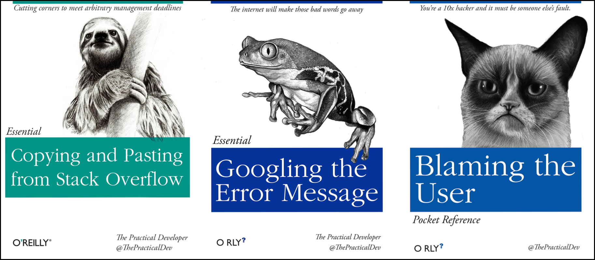

saveRDS(iris, file="iris.rds") # By convention, we use the .rds file extensionGetting help with R
- Locate help for an R function using
?,??, andargs() - Check the version of R
- Be able to ask effective questions when searching for help on forums or using web searches
- How do I get help using R and RStudio?
Getting help with R

No matter how much experience you have with R, you will find yourself needing help. There is no shame in researching how to do something in R, and most people will find themselves looking up how to do the same things that they “should know how to do” over and over again. Here are some tips to make this process as helpful and efficient as possible.
“Never memorize something that you can look up” -- A. Einstein
Finding help on Stackoverflow and Biostars
Two popular websites will be of great help with many R problems. For general R questions, Stack Overflow is probably the most popular online community for developers. If you start your question “How to do X in R” results from Stack Overflow are usually near the top of the list. For bioinformatics specific questions, Biostars is a popular online forum.
Help people help you
Often, in order to duplicate the issue you are having, someone may need to see the data you are working with or verify the versions of R or R packages you are using. The following R functions will help with this:
You can check the version of R you are working with using the sessionInfo() function. Actually, it is good to save this information as part of your notes on any analysis you are doing. When you run the same script that has worked fine a dozen times before, looking back at these notes will remind you that you upgraded R and forget to check your script.
sessionInfo()R version 3.2.3 (2015-12-10)
Platform: x86_64-pc-linux-gnu (64-bit)
Running under: Ubuntu 14.04.3 LTS
locale:
[1] LC_CTYPE=en_US.UTF-8 LC_NUMERIC=C LC_TIME=en_US.UTF-8
[4] LC_COLLATE=en_US.UTF-8 LC_MONETARY=en_US.UTF-8 LC_MESSAGES=en_US.UTF-8
[7] LC_PAPER=en_US.UTF-8 LC_NAME=C LC_ADDRESS=C
[10] LC_TELEPHONE=C LC_MEASUREMENT=en_US.UTF-8 LC_IDENTIFICATION=C
attached base packages:
[1] stats graphics grDevices utils datasets methods base
loaded via a namespace (and not attached):
[1] tools_3.2.3 packrat_0.4.9-1Many times, there may be some issues with your data and the way it is formatted. In that case, you may want to share that data with someone else. However, you may not need to share the whole dataset; looking at a subset of your 50,000 row, 10,000 column dataframe may be TMI (too much information)! You can take an object you have in memory such as dataframe (if you don’t know what this means yet, we will get to it!) and save it to a file. In our example we will use the dput() function on the iris dataframe which is an example dataset that is installed in R:
dput(head(iris)) # iris is an example data.frame that comes with R
# the `head()` function just takes the first 6 lines of the iris datasetThis generates some output (below) which you will be better able to interpret after covering the other R lessons. This info would be helpful in understanding how the data is formatted and possibly revealing problematic issues.
structure(list(Sepal.Length = c(5.1, 4.9, 4.7, 4.6, 5, 5.4),
Sepal.Width = c(3.5, 3, 3.2, 3.1, 3.6, 3.9), Petal.Length = c(1.4,
1.4, 1.3, 1.5, 1.4, 1.7), Petal.Width = c(0.2, 0.2, 0.2,
0.2, 0.2, 0.4), Species = structure(c(1L, 1L, 1L, 1L, 1L,
1L), .Label = c("setosa", "versicolor", "virginica"), class = "factor")), .Names = c("Sepal.Length",
"Sepal.Width", "Petal.Length", "Petal.Width", "Species"), row.names = c(NA,
6L), class = "data.frame")Alternatively, you can also save objects in R memory to a file by specifying the name of the object, in this case the iris data frame, and passing a filename to the file= argument.
Final FAQs on R
Finally, here are a few pieces of introductory R knowledge that are too good to pass up. While we won’t return to them in this course, we put them here because they come up commonly:
Do I need to click Run every time I want to run a script?
No. In fact, the most common shortcut key allows you to run a command (or any lines of the script that are highlighted):
- Windows execution shortcut: Ctrl+Enter
- Mac execution shortcut: Cmd(⌘)+Enter
To see a complete list of shortcuts, click on the Tools menu and select Keyboard Shortcuts Help
What’s with the brackets in R console output?
- R returns an index with your result. When your result contains multiple values, the number tells you what ordinal number begins the line, for example:
1:101 # generates the sequence of numbers from 1 to 101 [1] 1 2 3 4 5 6 7 8 9 10 11 12 13 14 15 16 17 18
[19] 19 20 21 22 23 24 25 26 27 28 29 30 31 32 33 34 35 36
[37] 37 38 39 40 41 42 43 44 45 46 47 48 49 50 51 52 53 54
[55] 55 56 57 58 59 60 61 62 63 64 65 66 67 68 69 70 71 72
[73] 73 74 75 76 77 78 79 80 81 82 83 84 85 86 87 88 89 90
[91] 91 92 93 94 95 96 97 98 99 100 101In the output above, [81] indicates that the first value on that line is the 81st item in your result
Can I run my R script without RStudio?
- Yes, remember - RStudio is running R. You get to use lots of the enhancements RStudio provides, but R works independent of RStudio. See these tips for running your commands at the command line
Where else can I learn about RStudio?
- Check out the Help menu, especially “Cheatsheets” section
- R provides thousands of functions for analyzing data, and provides several way to get help
- Using R will mean searching for online help, and there are tips and resources on how to search effectively